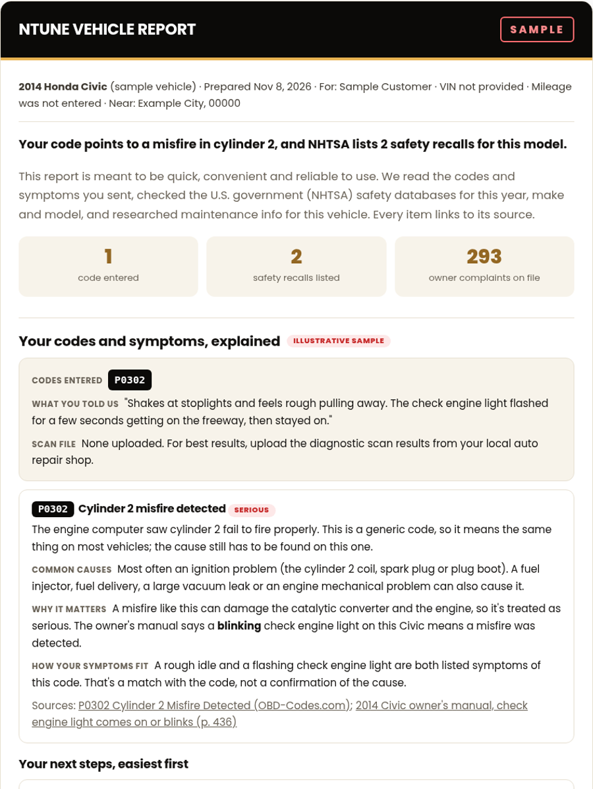

Get your free plain-language vehicle report.
Tell us about your vehicle and what it's doing. The more you give us (especially a scan from your shop), the more useful your report can be.
- The check engine light came on and you're not sure it's safe to keep driving.
- Your code reader shows a code and nothing about what to do next.
- A search turns up ten possible causes and no order to check them in.
- You'd rather know what you're dealing with before you buy parts.
A report puts your codes, symptoms and scan into plain language and lists next steps easiest first.

SAMPLE: made-up vehicle and owner. See the full sample report.
Everything for your exact vehicle, with sources.
- A plain-language read of your codes, symptoms and scan
- Next steps, easiest first
- Safety recalls for your year, make and model
- Common areas owners report
- Your owner's manual link, maintenance and care tips
- Mobile mechanics, parts stores and shops near your city or ZIP
- Free extra: a one-page check engine light first-steps checklist (PDF)
Thanks, .
We've got your request for your . Your report will be emailed to . This is a test version and reports are prepared one at a time, so timing can vary.
While you wait, check your exact VIN for open recalls at nhtsa.gov/recalls.
After your report arrives, we'd value an honest review: leave a review.
Local-only note: this browser saved a copy of your request because the live send did not run. Nothing was emailed.
Free while we test. No account needed.
Takes about [X] minutes.
- Every item linked to its source
- Recalls, owner complaints and maintenance for your exact vehicle
We don't ask for your street address, phone number or payment. Your information is never sold to third parties or used to target ads. See the disclaimer.
Not a replacement for a good diagnostic tool. For best results, upload the diagnostic scan results from your local auto repair shop. See a sample report.